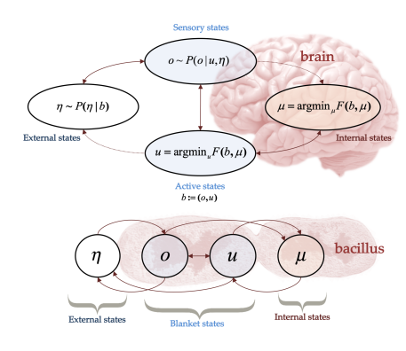

Noor Sajid
I am a neuroscience PhD candidate in the Theoretical Neurobiology
group at University College London, supervised by Karl Friston.
My primary research interests are variational inference, hierarchical generative models, biological adaptation and the Bayesian brain.
Active (variational) inference
Sajid, N.*, Ball, P. J., & Friston, K. (2019). Active inference: demystified and compared. arXiv preprint arXiv:1909.10863. (In press, Neural Computations 2020)
We provide a simplified perspective of active inference and a discrete case comparison with reinforcement learning.

Da Costa, L., Parr, T., Sajid, N.*, Veselic, S., Neacsu, V., & Friston, K. (2020). Active inference on discrete state-spaces: a synthesis. arXiv preprint arXiv:2001.07203.
We provide a synthesized perspective of the active inference theory

Parr, T., Sajid, N.*, & Friston, K. J. (2020). Modules or Mean-Fields?. Entropy, 22(5), 552.
We argue that it is factorisation, as opposed to modularisation, that gives rise to the functional anatomy of the brain or, indeed, any sentient system.

Fountas, Z., Sajid, N.*, Mediano, P. A., & Friston, K. (2020). Deep active inference agents using Monte-Carlo methods. arXiv preprint arXiv:2006.04176.
We present a neural architecture for building deep active inference agents operating in complex, continuous
state-spaces using multiple forms of Monte-Carlo (MC) sampling.

Da Costa, L., Sajid, N.*, Parr, T., Friston, K., & Smith, R. (2020). The relationship between dynamic programming and active inference: the discrete, finite-horizon case. arXiv preprint arXiv:2009.08111.
We consider the
relation between active inference and dynamic programming under the Bellman equation. We show that, on partially
observable Markov decision processes, dynamic programming is a limiting case of active inference.
Biological systems and adaptation

Sajid, N.*, Parr, T., Hope, T. M., Price, C. J., & Friston, K. J. (2020). Degeneracy and Redundancy in Active Inference. Cerebral Cortex.
We explicitly differentiate between degeneracy and redundancy using the variational objective (free energy functional and provide a way to measure degeneracy and redundancy in the same (natural) units of information.
Sajid, N.* Parr, T., Gajardo-Vidal, A., Price, C. J., & Friston, K. J. (2020) Paradoxical lesions, plasticity and active inference, Brain Communications.
Our simulations demonstrate one way that subjects may recover after a secondary lesion: a specific form of inhibitory-excitatory rebalancing, to evince an apparent increase in cortical excitability, to promote adaptive plasticity

Sajid, N.*, Friston, K. J., Ekert, J. O., Price, C. J., & W Green, D. (2020). Neuromodulatory Control and Language Recovery in Bilingual Aphasia: An Active Inference Approach. Behavioral Sciences, 10(10), 161.
We infer that difficulties in controlling intact language networks may be mediated by constraints on this neuromodulatory resource and formalise the possible underlying mechanisms using active inference.

Friston, K. J., Parr, T., Yufik, Y., Sajid, N.*, Price, C. J., & Holmes, E. (2020). Generative models, linguistic communication and active inference. Neuroscience & Biobehavioral Reviews.
We present a new (hierarchical) generative model for linguistic interactions and simulate the 20-questions game.

Friston, K. J., Sajid, N.*, Quiroga-Martinez, D. R., Parr, T., Price, C. J., & Holmes, E. (2020). Active listening. Hearing Research.
We describe a generative model for synthesising and recognising speech by considering speech segmentation (placing word boundaries) as an active process.

Roohani, Y. H., Sajid, N.*, Madhyastha, P., Price, C. J., & Hope, T. M. (2018). Predicting Language Recovery after Stroke with Convolutional Networks on Stitched MRI. arXiv preprint arXiv:1811.10520.
We present a novel method where we only make use of stitched 2−dimensional cross-sections of raw MRI scans in a deep convolutional neural network setup to predict language recovery post-stroke.